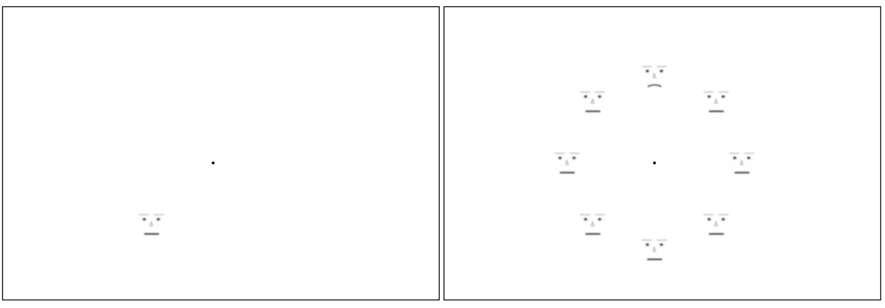

<!DOCTYPE html>
<html>
    <head>
      <title>CIG</title>
      <script src="../jspsych-6.3.1/jspsych.js"></script>
      <script src="../jspsych-6.3.1/plugins/jspsych-html-keyboard-response.js"></script>
      <script src="../jspsych-6.3.1/plugins/jspsych-categorize-image.js"></script>
      <script src="../jspsych-6.3.1/plugins/jspsych-image-keyboard-response.js"></script>
      <script src="../jspsych-6.3.1/plugins/jspsych-same-different-image.js"></script>
      <script src="../jspsych-6.3.1/plugins/jspsych-fullscreen.js"></script>
      <script src="../jspsych-6.3.1/plugins/jspsych-preload.js"></script>
      <script src="jspsych-html-slider-response.js"></script>
      <script src="jspsych-survey-text.js"></script>
      <script src="jspsych-html-slider-response_original.js"></script>
      <script src="jspsych-html-slider-response_8sliders.js"></script>
      <script src="../jspsych-6.3.1/plugins/jspsych-image-button-response.js"></script>
      <script src="../jspsych-6.3.1/plugins/jspsych-instructions.js"></script>
      <script src="../jspsych-6.3.1/plugins/jspsych-audio-keyboard-response.js"></script>
      <script src="../jspsych-6.0.5/plugins/jspsych-fullscreen.js"></script>
      <script src="../jspsych-6.3.1/plugins/jspsych-call-function.js"></script>
      <script src="jspsych-ydk.js"></script>

      <script src="jspsych-rdk_2.js"></script>

      <script src="jspsych-survey-likert.js"></script>
      <script src="demoQ.js"></script>
      
      <script src="../jspsych-6.3.1/plugins/jspsych-survey-multi-choice.js"></script>
      
      <script src="faceTrials.js"></script>
            
      <script src="vignettes_8sliders.js"></script>

      <script src="../jspsych-6.0.5/plugins/jspsych-rdk.js"></script>
      <script src="jspsych-rdkRedDot.js"></script>
      <script src="../jspsych-6.0.5/plugins/jspsych-html-button-response.js"></script>
      
        <script src="../jspsych-6.0.5/plugins/jspsych-fullscreen.js"></script>
        
        <link href="../jspsych-6.0.5/css/jspsych.css" rel="stylesheet" type="text/css">
    </head>
    <style>
    .circle-container {
            position: relative;
            width: 24em;
            height: 24em;
            padding: 2.8em;
            /*2.8em = 2em*1.4 (2em = half the width of a link with img, 1.4 = sqrt(2))*/
            /*border: dashed 1px;*/
            border-radius: 50%;
            margin: 1.75em auto 0;
        }
        .circle-container a {
            display: block;
            position: absolute;
            top: 50%; left: 50%;
            width: 4em; height: 4em;
            margin: -2em;
        }
        .circle-container img { display: block; width: 100%; }
        .deg0 { transform: translate(12em); } /* 12em = half the width of the wrapper */
        .deg45 { transform: rotate(45deg) translate(12em) rotate(-45deg); }
        .deg90 { transform: rotate(90deg) translate(12em) rotate(-90deg); }
        .deg135 { transform: rotate(135deg) translate(12em) rotate(-135deg); }
        .deg180 { transform: translate(-12em); }
        .deg225 { transform: rotate(225deg) translate(12em) rotate(-225deg); }
        .deg270 { transform: rotate(270deg) translate(12em) rotate(-270deg); }
        .deg315 { transform: rotate(315deg) translate(12em) rotate(-315deg); }

    
    .fixation {font-size: 45px; font-weight: bold; color: rgb(0, 0, 0);}

    </style>
    <body></body>
    <script>

var timeline = []
var questionOrder = 0 
var sliderQuestions = 0
var count = 0;
var count_magEst = 0;
var nTrials = faceTrials.length // 100 is for 100 images, 5 for 5 slider questions per an image.

var participantID = jsPsych.data.getURLVariable('ParticipantID');
console.log('Participant ID is:', participantID);
if (typeof participantID === "undefined") {
alert("participant ID is undefined, assigning arbitrarily. ");
var participantID = 1;
}
jsPsych.data.addProperties({participant_ID: participantID});


function saveData() {
  var xhr = new XMLHttpRequest();
  xhr.open('POST', 'write_data.php'); // change 'write_data.php' to point to php script.
  xhr.setRequestHeader('Content-Type', 'application/json');
  xhr.onload = function() {
    if(xhr.status == 200){
      var response = JSON.parse(xhr.responseText);
      console.log(response.success);
    }
  };
  //xhr.send(jsPsych.data.get().json());
  //xhr.send(jsPsych.data.get().json());
  xhr.send(jsPsych.data.get().last(1).json());
}

// change the color of the background and the text
document.body.style.backgroundColor = 'white'//"#808080"
document.body.style.color = 'black'

// START OF THE FACE SET // 
curvatureResponseTrial_2 = {
    type: 'html-slider-response_original',
    stimulus: function(){
      return `
    <div style = "width:540px;">
      <p>  Every display contained either a happy or sad face please report the perceived intensity of the happy or sad expression.</p>
      <br>
      
    </div>`},
    labels: ['', '', ''], //['downward curve / sad', 'middle', 'upward curve / happy']
    step: 0.5,
    min: 1,
    max: 10,
    on_finish: function(data){
      data.faceTrialID = jsPsych.timelineVariable('id')
      var timestamp = (new Date).toISOString().replace(/z|t/gi,' ').trim();
      jsPsych.data.addDataToLastTrial({timestamp});
      saveData()
    }
}

var curvatureResponseTrial = {
    type: 'image-keyboard-response',
    stimulus: 'magnitude_choice_original.jpg',
    choices: ['0', '1', '2', '3', '4', '5', '6', '7', '8', '9'],
    prompt: "<p>Please use numbers on the keyboard to select to report the perceived intensity of the happy or sad expression.</p>",
    on_finish: function(data){
      data.faceTrialID = jsPsych.timelineVariable('id')
      var timestamp = (new Date).toISOString().replace(/z|t/gi,' ').trim();
      jsPsych.data.addDataToLastTrial({timestamp});
      saveData()
    }
};

var preloadedImages = ["singleFace_empty.jpg", "singleFace_neutral.jpg", "singleFace_sad.jpg", "singleFace_happy.jpg", "fixation.jpg", "magnitude_choice.jpg"]

var preload = {
    type: 'preload',
    auto_preload: true, // automatically load all files based on the main timeline
    images: preloadedImages // to preload manually
};

var test_trial_magEst = {
  type: 'html-keyboard-response',
    stimulus: function() {
    return `
    <div class='circle-container'>
        <a href='#' class='center'></a>
        <a href='#' class='deg0'></a>
        <a href='#' class='deg45'></a>
        <a href='#' class='deg90'></a>
        <a href='#' class='deg135'></a>
        <a href='#' class='deg180'></a>
        <a href='#' class='deg225'></a>
        <a href='#' class='deg270'></a>
        <a href='#' class='deg315'></a>
    </div>`},
    choices: ['Space', 'f', 'j'],
    response_ends_trial: true,
    trial_duration: 100,
    on_finish: function(data){
      data.faceTrialID = jsPsych.timelineVariable('id')
      var timestamp = (new Date).toISOString().replace(/z|t/gi,' ').trim();
      jsPsych.data.addDataToLastTrial({timestamp});
      if (data.faceTrialID == "sad_7N" | data.faceTrialID == "sad_7N" ) {
        data.targetLoc = jsPsych.timelineVariable('faceList').indexOf('sad')
      }
      else if (data.faceTrialID == "happy_7N" | data.faceTrialID == "happy_single") {
        data.targetLoc = jsPsych.timelineVariable('faceList').indexOf('happy')
      }
      else {
        data.targetLoc = jsPsych.timelineVariable('faceList').indexOf('neutral')
      }
      data.stimArray = jsPsych.timelineVariable('faceList').toString();
      count_magEst++;
      var progress = count_magEst/nTrials;
      jsPsych.setProgressBar(progress);
      saveData()
    }
};


var test_trial = {
  type: 'html-keyboard-response',
    stimulus: function() {
    return `
    <div class='circle-container'>
        <a href='#' class='center'></a>
        <a href='#' class='deg0'></a>
        <a href='#' class='deg45'></a>
        <a href='#' class='deg90'></a>
        <a href='#' class='deg135'></a>
        <a href='#' class='deg180'></a>
        <a href='#' class='deg225'></a>
        <a href='#' class='deg270'></a>
        <a href='#' class='deg315'></a>
    </div>`},
    choices: ['Space', 'f', 'j'],
    response_ends_trial: true,
    trial_duration: null,
    on_finish: function(data){
      data.faceTrialID = jsPsych.timelineVariable('id')
      var timestamp = (new Date).toISOString().replace(/z|t/gi,' ').trim();
      jsPsych.data.addDataToLastTrial({timestamp});
      if (data.faceTrialID == "sad_7N" | data.faceTrialID == "sad_7N" ) {
        data.targetLoc = jsPsych.timelineVariable('faceList').indexOf('sad')
      }
      else if (data.faceTrialID == "happy_7N" | data.faceTrialID == "happy_single") {
        data.targetLoc = jsPsych.timelineVariable('faceList').indexOf('happy')
      }
      else {
        data.targetLoc = jsPsych.timelineVariable('faceList').indexOf('neutral')
      }
      data.stimArray = jsPsych.timelineVariable('faceList').toString();
      count++;
      var progress = count/nTrials;
      jsPsych.setProgressBar(progress);
      saveData()
    }
};

var blank_trial = {
  type: 'html-keyboard-response',
    stimulus: function() {
    return `
    <div class='circle-container'>
        <a href='#' class='center'></a>
    </div>`},
    choices: ['g'],
    response_ends_trial: false,
    trial_duration: 500
};


var fixation = {
    type: 'html-keyboard-response',
    stimulus: '+',
    choices: "NO_KEYS",
    trial_duration: 500,
    css_classes: ['fixation']
}


// MAG EST PRACTICE AND INSTRUCTIONS //


var faceInstructions_1 = {
    type: 'instructions',
    pages: [
        '<p>Alright, now we move on to the second and the final task. Now you will complete a visual experiment for a few more minutes.</p>'+
        '<p>On each trial you will see a fixation point for 1 second, please focus your attention on that point. Like the one below. <p>'+
        '<br>'+
        '</img>',
        '<p> Next, you will see either a <b>single face</b> or <b>group of faces</b> for a very brief duration (shorter than half of a second). Like the below: </p> <br>' + 
          '<p> For example, this is a <b>happy</b> face (mouth has a <b>upward</b> curvature): </p> <br>' + '</img> <br>' +
            '<p> <b>Sad</b> face (mouth has a <b>downward</b> curvature): </p> <br>'  + '</img> <br>' +
          '<p> <b>Neutral</b> face: </p> <br>' + '</img>' + '<br><br><br>',
          '<br><br><p> As seen above, you will always see <b>8 faces</b> in total and <b>7 of them</b> will always be a <b>neutral face</b>. And the 8th one will be your target face (emotional face). <br><br>You are asked to respond to the curvature of the mouth of the <b>emotional face</b> (happy or sad). You will know which one will it be. </p>',
        '<p> On each trial you will be asked to judge the curvature of the emotional face by pressing a number on your keyboard. <br><br>Here is the response scale for each curvature and its associated number. You are asked to use your keyboard to respond. For responding "10" please use the key "0" (zero). </p> <br><br><br>' + 
          '</img> <br>'
    ],
    show_clickable_nav: true
}


var faceTrials_practice = [
  {
    "id": "7_neutral_1_sad",
    "faceList": ["neutral", "neutral", "neutral", "neutral", "sad", "neutral", "neutral", "neutral"],
  },
  {
    "id": "single_happy",
    "faceList": ["empty", "empty", "empty", "empty", "happy", "empty", "empty", "empty"],
  },
  {
    "id": "single_sad",
    "faceList": ["empty", "empty", "sad", "empty", "empty", "empty", "empty", "empty"],
  },
  {
    "id": "single_neutral",
    "faceList": ["empty", "empty", "empty", "empty", "empty", "empty", "neutral", "empty"],
  }
]
faceTrials_practice = jsPsych.randomization.repeat(faceTrials_practice, 1)

var test_trial_practice = {
  type: 'html-keyboard-response',
    stimulus: function() {

    return `
    <div class='circle-container'>
        <a href='#' class='center'></a>
        <a href='#' class='deg0'></a>
        <a href='#' class='deg45'></a>
        <a href='#' class='deg90'></a>
        <a href='#' class='deg135'></a>
        <a href='#' class='deg180'></a>
        <a href='#' class='deg225'></a>
        <a href='#' class='deg270'></a>
        <a href='#' class='deg315'></a>
    </div>`},
    choices: ['g'],
    response_ends_trial: false,
    trial_duration: 500,
};

var test_trial_practice_fast = {
  type: 'html-keyboard-response',
    stimulus: function() {
    return `
    <div class='circle-container'>
        <a href='#' class='center'></a>
        <a href='#' class='deg0'></a>
        <a href='#' class='deg45'></a>
        <a href='#' class='deg90'></a>
        <a href='#' class='deg135'></a>
        <a href='#' class='deg180'></a>
        <a href='#' class='deg225'></a>
        <a href='#' class='deg270'></a>
        <a href='#' class='deg315'></a>
    </div>`},
    choices: ['g'],
    response_ends_trial: false,
    trial_duration: 100,
};

var curvatureResponseTrial_practice = {
    type: 'image-keyboard-response',
    stimulus: 'magnitude_choice_original.jpg',
    choices: ['0', '1', '2', '3', '4', '5', '6', '7', '8', '9'],
    prompt: "<p>Please use numbers on the keyboard to report the perceived intensity of the happy or sad expression.</p>"
};


const face_practice = {
    timeline:[blank_trial, test_trial_practice, blank_trial, curvatureResponseTrial_practice], //target_trial
    timeline_variables: faceTrials_practice
}

var faceInstructions_2 = {
    type: 'instructions',
    pages: [
        '<p> <i>Recap:</i>you are asked to report the perceived intensity/curvature of the emotional expression. </p>',
        '<p>Now you understand the basics of it. <br> Now it&rsquo;s time for you to do some practice trials.</p>'
    ],
    show_clickable_nav: true
}

var faceInstructions_3 = {
    type: 'instructions',
    pages: [
        '<p>Now you understand the basics of it. I&rsquo;m going to show you what the real trial looks like. </p>'
    ],
    show_clickable_nav: true
}

var faceTrials_practice = [
  {
  "id": "7_neutral_1_happy",
  "faceList": ["happy", "neutral", "neutral", "neutral", "neutral", "neutral", "neutral", "neutral"],
  },
  {
    "id": "7_neutral_1_sad",
    "faceList": ["sad", "neutral", "neutral", "neutral", "neutral", "neutral", "neutral", "neutral"],
  },
  {
    "id": "7_neutral_1_neutral",
    "faceList": ["sad", "neutral", "neutral", "neutral", "neutral", "neutral", "neutral", "neutral"],
  },
  {
    "id": "single_happy",
    "faceList": ["happy", "empty", "empty", "empty", "empty", "empty", "empty", "empty"],
  },
  {
    "id": "single_sad",
    "faceList": ["sad", "empty", "empty", "empty", "empty", "empty", "empty", "empty"],
  },
  {
    "id": "single_neutral",
    "faceList": ["neutral", "empty", "empty", "empty", "empty", "empty", "empty", "empty"],
  }
]

faceTrials_practice = jsPsych.randomization.repeat(faceTrials_practice, 1)
const face_practice_fast = {
    timeline:[blank_trial, test_trial_practice_fast, blank_trial, curvatureResponseTrial_practice], //target_trial
    timeline_variables: faceTrials_practice
}

var faceInstructions_4 = {
    type: 'instructions',
    pages: [
        '<p>Please don&rsquo;t think about whether you&rsquo;re correct or incorrect. All we care about is that you tell us what you see. That&rsquo;s all that matters. So, as long as you tell us what you see, or as long as you give us your best guess, then you&rsquo;ll have done a good job.</p>' +
        '<p> '
    ],
    show_clickable_nav: true
}
var practiceEndText = {
    type: 'instructions',
    pages: [
        '<p>Alright, you&rsquo;re definitely ready to move on to the game.</p>'+
      '<p>You&rsquo;re going to run in the real game now. It should take about a few minutes. There will be many more trials than the practice session you just did, so please do your best to pay attention the whole time? </p>'+ 
    '<p>When you&rsquo;re ready, go ahead and get started.</p>'],
    show_clickable_nav: true
}
const practiceProc = {
    timeline:[faceInstructions_1, faceInstructions_2, face_practice, faceInstructions_3, face_practice_fast, faceInstructions_4, practiceEndText], //target_trial
}

// END OF MagEstTask Instructions and practice // 

/* Welcome....
In this task, you will be viewing cartoon faces.
Sometimes you'll see one face on the screen. Sometimes you'll see eight faces on the screen.
Your task will be to indicate, on each trial, whether an emotional face is present on the screen.
If a single face is on the screen, it might be sad, happy, or neutral. [add the image]
If eight faces are on the screen, at least seven of them will have neutral expressions.
The eight face may have a happy expression, a sad expression, or a neutral expression.
On each trial, your task is simply to indicate whether an emotional face is present.
If an emotional face is present anywhere on the screen, press the 'f' button.
If an emotional face is NOT present, press the 'j' button. 
Please respond as quickly as possible. 
However, keep in mind that accuracy is important, too. 
Thanks bozo!
 */

 /*
 <div class='circle-container'>
      <a href='#' class='center'></a>
      <a href='#' class='deg0'></a>
      <a href='#' class='deg45'></a>
      <a href='#' class='deg90'></a>
      <a href='#' class='deg135'></a>
      <a href='#' class='deg180'></a>
      <a href='#' class='deg225'></a>
      <a href='#' class='deg270'></a>
      <a href='#' class='deg315'></a>
    </div>
    */


// END  OF THE FACE SET // 
var introText = {
type: "instructions",
on_start: function(){
  jsPsych.setProgressBar(0);
},
  pages: function(){
    return [
  `<p>Welcome to our visual search task! <br><br> You will be doing 2 tasks each should last around 5 minutes. Let us orient you to the first task.
   <br> We will provide the instructions for the second task after the first. <br><br></p>`,
  `<p> In this first task, you will be viewing cartoon faces. Like these: <br> <br></img></img>
    <br><br> Sometimes you'll see <i>one</i> face on the screen. <br>Sometimes you'll see <i>eight</i> faces on the screen. 
    <br><br><figcaption>Fig.1 Left: Single Trial | Right: 8 Faces (Crowd) Trial </figcaption>
    <br>Your task will be to indicate, on each trial, whether an emotional face is present on the screen.
    <br><br>If a <i>single</i> face is on the screen, it might be sad, happy, or neutral. 
    <br><br>If <i>eight faces</i> are on the screen, at least seven of them will have neutral expressions. 
    <br>The eight face may have a happy expression, a sad expression, or a neutral expression.
    <br><br>On each trial, your task is simply to indicate whether an emotional face (meaning happy or sad expression) is present.
    <br><br>If an emotional face is present anywhere on the screen, press the 'f' button.
    <br><br>If an emotional face is NOT present, press the 'j' button.
    <br><br>For example, in figure 1, on the left, we see a single neutral face. In that trial we expect you to press 'j' because it is NOT anemotional face. For the crowd of faces to the right, we expect you to press 'f' because there is a sad face in that crowd (top) which is an emotional face. 
    <br><br>Please respond as quickly as possible. 
    <br>However, keep in mind that accuracy is important, too. 
    `,
    `<br><br>Recap: Please keep your fixation at the black dot at the center. Actually looking at the black dot will help you find the emotional face (if there is) faster also! <br><br>Please press 'f' when you detect an emotional face (e.g. happy or sad expression) in a crowd of faces or single.<br><br> If an emotional face is NOT present, please press the 'j' button.`
  ]}, 
    show_clickable_nav:true
}; 
//            

var endText_scale = {
type: "html-slider-response_original",
      stimulus: function(){
            return `
          <div style = "width:540px;">
            <p> The experiment is over. Thank you for your time! Last question: Do you think you detected the happy face faster than a sad face? Press y for yes and o for no.</p>
            <br>
          </div>`}, 
  show_clickable_nav:false,
  response_ends_trial: true,
  trial_duration: null,
  on_finish: function(data){
      var timestamp = (new Date).toISOString().replace(/z|t/gi,' ').trim();
      jsPsych.data.addDataToLastTrial({timestamp});
    }
}; 


var endText = {
  type: 'html-keyboard-response',
    stimulus: function() {
    return `
          <div style = "width:540px;">
            <p> The experiment is over. Thank you for your time! Last question: Do you think you detected the happy face faster than a sad face? Press y for yes and o for no.</p>
            <br>
          </div>`},
    choices: ['y', 'o'],
    response_ends_trial: true,
    trial_duration: null,
    on_finish: function(data){
      var timestamp = (new Date).toISOString().replace(/z|t/gi,' ').trim();
      jsPsych.data.addDataToLastTrial({timestamp});
      saveData()
    }
};

var endText_confidence = {
type: "html-slider-response_original",
      stimulus: function(){
            return `
          <div style = "width:540px;">
            <p> And how confident you are about with your answer?</p>
            <br>
          </div>`}, 
  show_clickable_nav:false,
  response_ends_trial: true,
  trial_duration: null,
  labels: ['I have no idea', 'Very Confident'],
  on_finish: function(data){
      var timestamp = (new Date).toISOString().replace(/z|t/gi,' ').trim();
      jsPsych.data.addDataToLastTrial({timestamp});
      saveData()
    }
}; 

var searchInstructions = {
    type: 'instructions',
    pages: [
        '<p></p>'+
        '<p> You will see either a <b>single face</b> or <b>group of faces</b> for a very long duration. Like the below: </p> <br>' + 
          '<p> For example, this is a <b>happy</b> face (mouth has a <b>upward</b> curvature): </p> <br>' + '</img> <br>' +
            '<p> <b>Sad</b> face (mouth has a <b>downward</b> curvature): </p> <br>'  + '</img> <br>' +
          '<p> <b>Neutral</b> face: </p> <br>' + '</img>' + '<br><br><br>',
        '<p> And, here is how a trial with a group of faces look like:'+ 
          `
          <div class='circle-container'>
              <a href='#' class='center'></a>
              <a href='#' class='deg0'></a>
              <a href='#' class='deg45'></a>
              <a href='#' class='deg90'></a>
              <a href='#' class='deg135'></a>
              <a href='#' class='deg180'></a>
              <a href='#' class='deg225'></a>
              <a href='#' class='deg270'></a>
              <a href='#' class='deg315'></a>
          </div>`
    ],
    show_clickable_nav: true
}

var debrief = {
    type: "instructions",
      pages: function(){
        return [`<div style="width:700px;"><p style='font-size: 25px'>
        <br><br> <p style="color:blue;">The experiment has ended. Thank you so much for your time! </p>
        This study is concerned with the detection ability in which people think about others. In this study, you were asked to listen to a sound clip (e.g., white noise, a few people talking, or crowd of people) and mentally visualize what it might be like in that type of an environment. Next, you were asked to evaluate multiple individuals (e.g., a librarian, computer programmer) while listening to these sound clips in the background. We were primarily interested in the extent to which cues of crowding impact judgments about novel individuals. We expect this study to have important implications for how scientists understand the impact of crowds in social perception and how people respond to others in crowded contexts. For this reason, we highly value your participation today and we expect it to have an important impact.\
        <br><br>IMPORTANT: We would like to ask to not to talk with anyone who might be a participant in this study. The main reason for this is that it is important that people respond naturally to this study, and it can be hard to do that when you know the details. Thank you for your consideration. \
        <br><br>If you have additional questions, comments, or otherwise concerns regarding this experiment or the SPA Lab, feel free to email Spencer dobbs at Spencer.dobbs@du.edu, Gorkem Er at Gorkem.Er@du.edu, or Professor Max Weisbuch at max.weisbuch@du.edu or the SPA Lab email at dupsychstudy@gmail.com \
        <br> You can close the window after pressing "next" button. Please note that the experiment has ended and your data is saved. You will not be redirected to SONA. Your grants will be awarded manually within 48 hours.

    `]},
        show_clickable_nav:true
    };  

const searchTask = {
    timeline:[blank_trial, test_trial ], // curvatureResponseTrial  target_trial
    timeline_variables: faceTrials
}

var faceTrials_magTask = jsPsych.randomization.repeat(faceTrials, 1)

const magnitudeEstTask = {
    timeline:[blank_trial, test_trial_magEst, curvatureResponseTrial ], // curvatureResponseTrial  target_trial
    timeline_variables: faceTrials_magTask
}

var fullscreen_trial = {
  type: 'fullscreen',
  fullscreen_mode: true
}

jsPsych.init({
    timeline: [magnitudeEstTask, fullscreen_trial, preload, introText, searchTask, practiceProc, magnitudeEstTask, endText, endText_confidence], //
    default_iti: 500,
    show_progress_bar: true,
    auto_update_progress_bar: false,
    message_progress_bar: 'Completion Progress',
});


</script>
</html>


